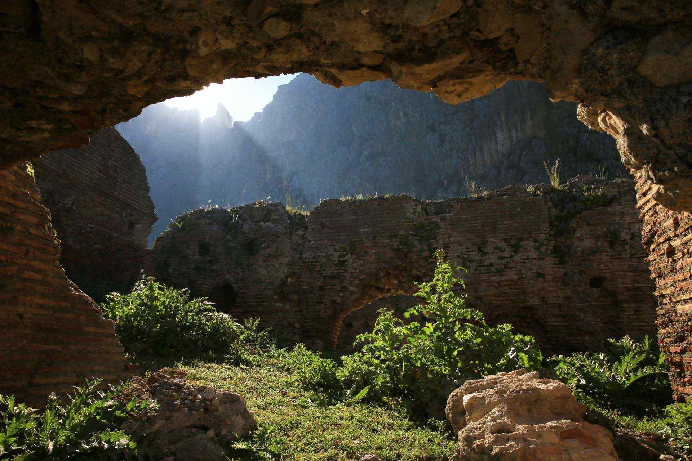

|  |
T.C. Kültür ve Turizm Bakanlığı, Kültür Varlıkları ve Müzeler Genel Müdürlüğü izniyle, Adana Arkeoloji Müzesi Müdürlüğü Başkanlığı'nda ve Çukurova Üniversitesi bilimsel danışmanlığında yürütülen Anavarza Antik Kenti'ndeki kazı çalışmalarına 2012 yılında başlanmıştır. Kent, Adana ilinin 70 km. kuzeydoğusunda, Kozan ilçesinin 28 km. güneyindeki Dilekkaya Köyü sınırları içinde yer alır.
4 bin dönüm alan üzerine kurulmuş olan kentin ismi Epigrafik araştırmalara göre, Persçe yenilmez anlamına gelen "NEZARBA" kelimesinden türemiştir. M.Ö. 19 yılında Roma İmparatoru Augustus’un burayı ziyareti sırasında tekrar planlanan ve adı Kaisareia olarak Augustus’a ithaf edilen kent Tarkondimotos Krallığının ekonomik, ticari ve politik merkezi olarak önem görmüştür.
İmparator Septimius Severus, Anavarza’yı M.S. 198 ve 203 yıllarında “neokoros”, 204 yılında da metropolis ünvanı ile onurlandırdı. Kilikya Pedias olarak bilinen (ovalık Kilikia) şehirlerin Parthlara karşı savaşında Roma ordusu için ideal bir yerleşim yeri kabul edilen kent, Roma ordularının lojistik destek birimi olarak öne çıktı. Şehir M.S. 204 de eyalet meclisinin Anavarza’da toplanmaya başlamasıyla bölge içinde lider kent olma özelliğine ulaştı. 3 kemerli muhteşem zafer takı, çift şeritli(duble) sütunlu caddesi, tiyatrosu, antik tiyatrosu, Circus Maximus’u (stadyum), tapınakları, meclis binası, nekropolleri ve hamamlarıyla birçok anıtsal yapı bu dönemde inşa edildi. Anavarza’da Ala Kapı olarak adlandırılan 3 kemerli Tak, Decumanus Maximus’a (kuzey-güney doğrultulu sütunlu ana caddeye) açılmaktadır. Çift şeritli (duble) planlı Ana cadde 34 m. genişlik ve 2700 m. uzunluktaki ölçüleriyle antik dünyanın en büyük cadde yapısını oluşturmaktadır. Tüm Anadolu’daki üç antik tiyatrodan günümüze en sağlam gelebileni Anavarza’dadır.
M.S 92 yılında imparator Domitianus tarafından yaptırılan 25 km. uzunluktaki su kemerleri dünyadaki en uzun ve gösterişli aquadüktler arasında gösterilmektedir.M.S. 408’de İmparator Theodisius Dönemi'nde Kilikya Secunda’nın başkenti ilan edilen kent; 525 ve 561 yıllarında iki büyük deprem ile yıkılmış Justinius ve 1. Justinianus Dönemlerinde yeniden inşa edilmiştir. M.S.7 ve 8 yüzyıllarda Araplar tarafından işgal edilen kent sonraki yüzyıllarda Araplar ve Bizanslar tarafından çeşitli defalar el değiştirmiştir.Sarp ve yüksek bir kaleyi çevreleyen 1500 m. uzunlukta ve her 70 m. içinde yer alan 20 burç ile tüm ovadan görülebilen görkemli ve etkileyici bir sur sistemine sahip kent M.S. 11 yy. da Alparslan’dan Kaçan 1.Toros tarafından işgal edilerek Armenia Krallığı’na başkent yapılmıştır. 1375 yılında Memlükler’den sonra tarih sahnesindeki önemini kaybeden kent veba salgınları gibi doğal unsurlarında etkisiyle terk edilmiştir.
|